Life is a gentle journey & hygge.
世界を旅して、ヒュッゲに出会って、今日も僕の歩幅で生きている。
つはらかずき（つっぴー）。山梨・韮崎のユースワーカーで、大学院生。
教育のこと、暮らしのこと、ファインダー越しに見つけた景色のことを、ここに置いています。
- 29/196訪れた国
- 41/47訪れた都道府県
- 赤穂 → 愛知 → 韮崎暮らしてきた場所
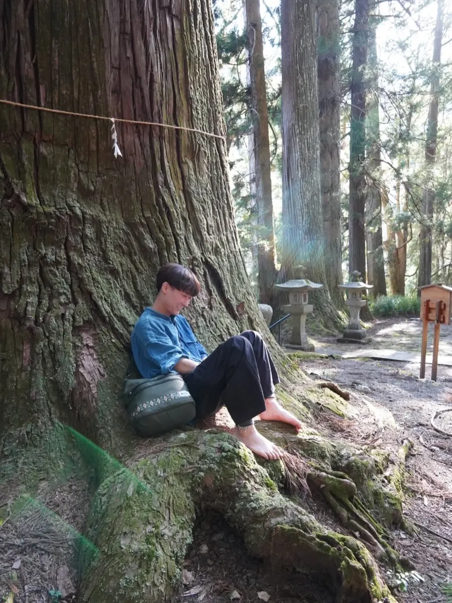
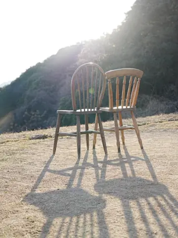
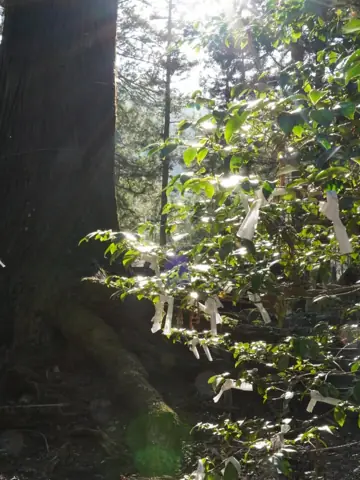
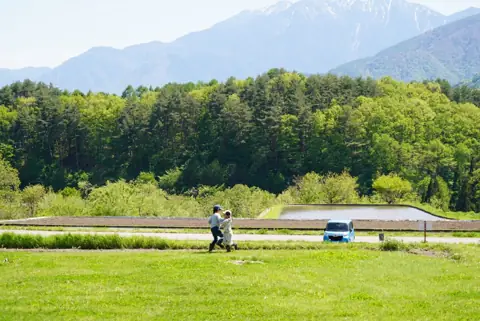
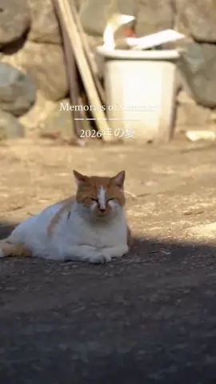
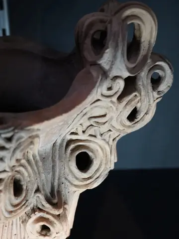
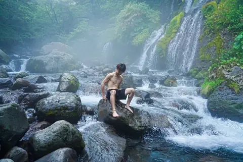
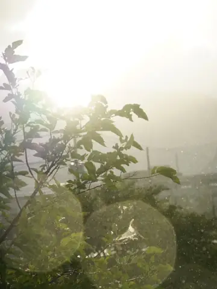
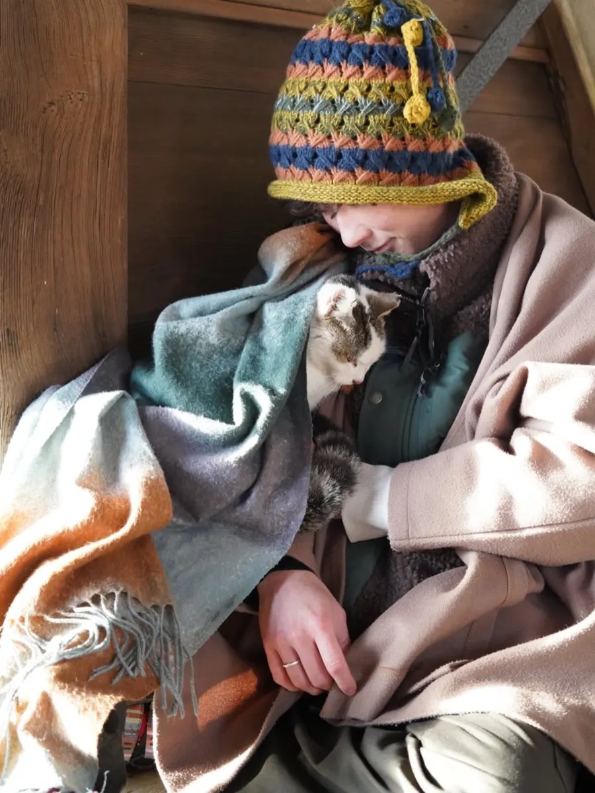
My story
違和感を抱いて、問いをもって、
在りたい姿で向かってみる。
兵庫県赤穂市で育ちました。中学生のころからの夢は「先生」。 その夢をきっかけに愛知教育大学へ進みましたが、授業はコロナ禍のオンラインから始まりました。
教育が学校だけに頼っていること。若い人が死を選んでしまうこと。 そこに抱いた違和感から、北欧デンマークの「幸せな社会」のつくり方を学びに海を渡り、 そのあとも世界各地で、学校や文化、歴史、暮らしに触れてきました。 自然の摂理と人の暮らしが結びつくところに、いまも可能性を感じています。
2025年7月、山梨県韮崎市へ。地域おこし協力隊として、ユースセンター「Miacis」で中高生や大学生と過ごしています。 2026年春に5年間の学部生活を終え、いまは大学院生。「循環」をテーマにした暮らしをつくりたくて、パーマカルチャーとゆるい農業も勉強中です。
いつでも、『今』が最前線。
過去にも未来にも答えはないと思ってます。
Questions I carry
抱き続けている問い
- 教育とはなにか。幸せとはなにか。
- 先生が変われば、学校がもっと良くなるのではないか。
- 先生の可能性を広げられれば、教育の可能性も広がるのではないか。
- 学校だけに頼らなくても、一人ひとりが在りたい姿を目指して生きる社会はつくれるのではないか。
まずは、ぼくからできることを。
Through my viewfinder
ファインダー越しの世界
ドラッグ・スワイプで回せます
What I'm part of
いま関わっていること
-
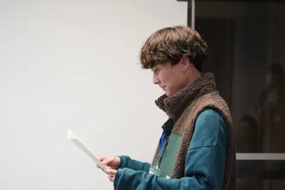
-
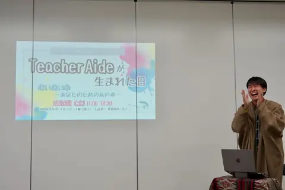
-
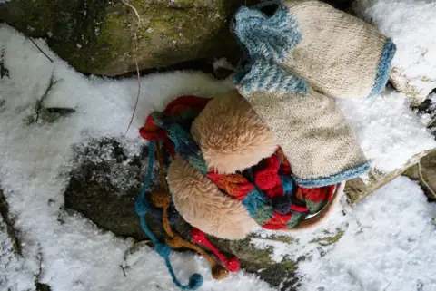
-
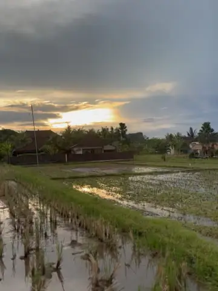
Permaculture
循環する暮らし
お世話になっている農家さんのもとで、田植えや畑をゆるく手伝いながら、地球にも人にもやさしい暮らしを学んでいます。
Journey
歩いてきた場所
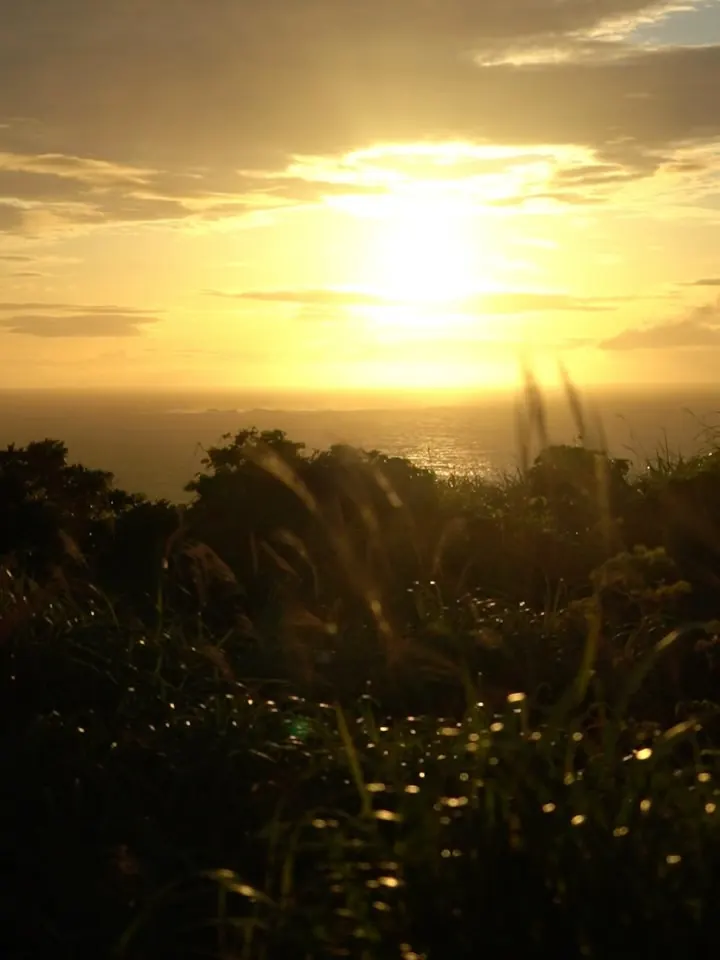
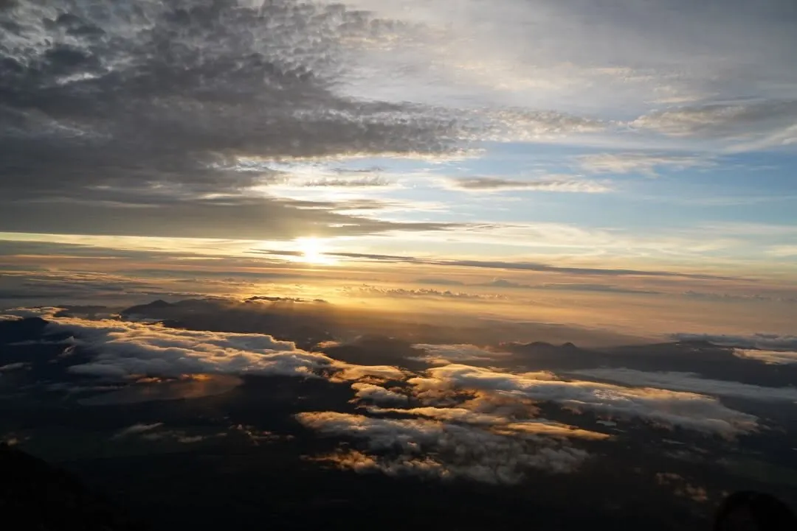
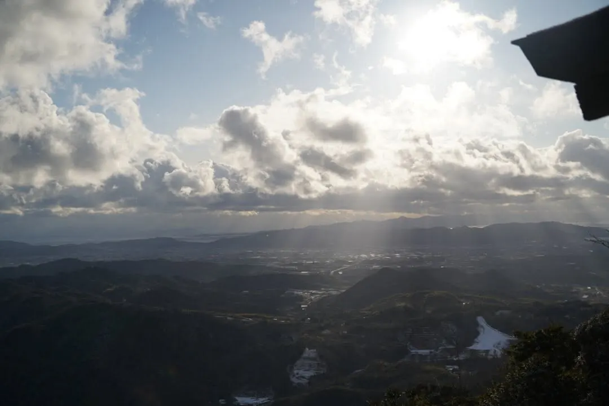
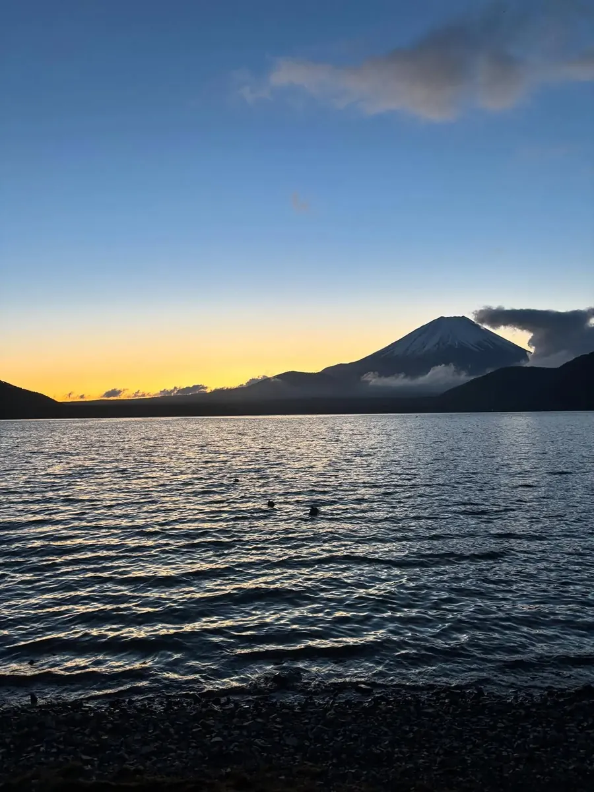
海外
国内
Journal
note に綴ったこと
今を綴って、残したり。
note をもっと読むLet's talk
珈琲でも飲みながら、ゆっくり話そう。
教育のこと、旅のこと、日々のふとしたモヤモヤ。なんでも。
話してみたいと思ったら、Instagram の DM から気軽にどうぞ。
Kazuki Tsuhara (Tuppy)